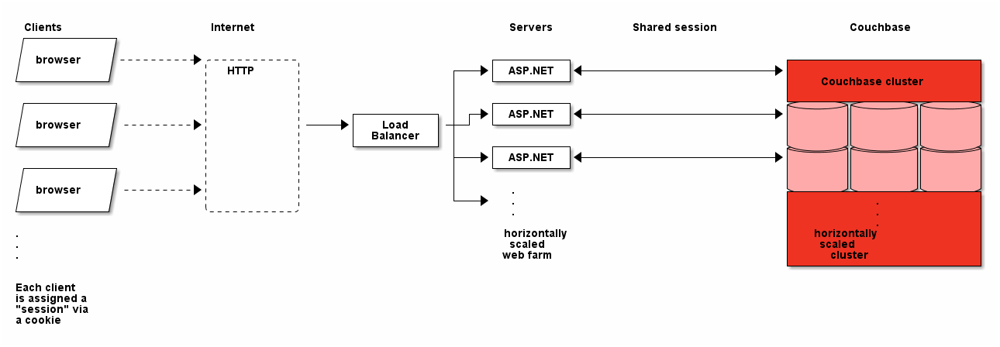
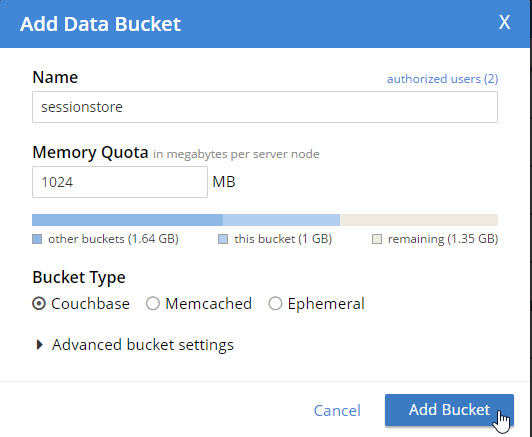
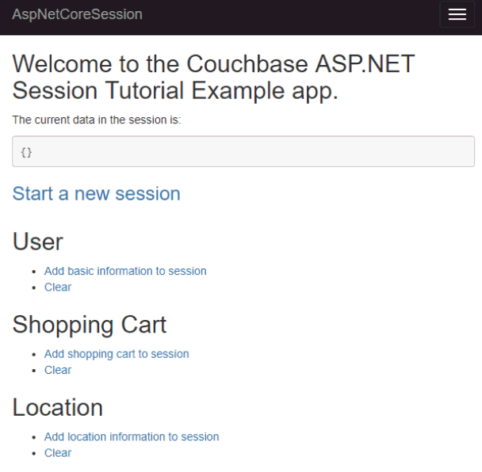
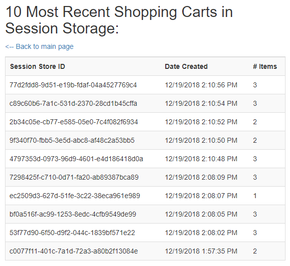
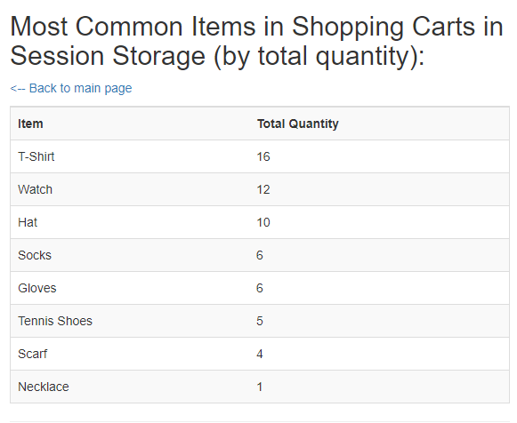

Using Couchbase Server as a Session Store
Overview
This tutorial contains four main sections:
-
What is a session store? If you’re new to session stores, this section discusses the how/why of sessions.
-
Installing Couchbase Start here if you’ve never setup Couchbase before.
-
Web server integration. Once you have a Couchbase Cluster set up, this tutorial will show how to integrate it with ASP.NET Core.
-
Exploring Session Data. In contrast to many other session storage options, Couchbase has unique capabilities for exploring session data and gaining insights into your users and customers.
What is a session store?
Web applications are session-oriented. When a user logs in to a site, for example, they start a "session". When the user logs out (or the session times out, more commonly), the session ends. The session and the user are correlated by giving a cookie to the user’s web browser with a lookup value that directly corresponds to session storage on the server side. (These details are generally behind the scenes when using a session storage framework). Sessions may be stored temporarily or indefinitely, depending on your use case.
What is stored in session?
Any state that a user needs can be stored in session. It could be as minimal as the user’s name. User preferences can also be stored in session: language, preferred retail location, invitation/coupon codes, authorization, and more.
Some more examples of data you might put in a session store:
-
Shopping carts / baskets (for ecommerce)
-
Ticket selections (for events/ticket sales)
-
Bet slips (as you build before you submit)
-
Cookie tracking
-
Browse-back (to keep track of where a user came from)
-
Site activity tracking (to watch a customer’s journey on your site)
Why do I need one?
Because HTTP is "stateless", a web application needs to store session-related data somewhere. By default, session data is usually stored in memory on the web server. However, if the web server goes down or is restarted, that session information is wiped out. To prevent this, session data can be stored elsewhere.
Session storage with web farms
Another reason to store session data elsewhere is because of web farms. In the below diagram, an ASP.NET web application is being scaled horizontally. Incoming HTTP requests are routed through a load balancer which picks one of the ASP.NET servers to send the user’s request.

If session data is stored on the web server itself, then a single user can only interact with a single server. The load balancer must send the user to the same server every time. This is known as "sticky sessions".
Sticky sessions can be problematic (can result in unbalanced loads, and data still can be wiped out by a web server going down). Using a shared location for data avoids enabling sticky sessions.
Why Couchbase is a good choice for a Session Store
The bare minimum for a good session store should be:
-
Performance: Couchbase Server has a memory-first architecture. Data can be retrieved with very low latency. This is important because session data is often retrieved on every page.
-
Flexibility: Session data can vary a lot depending on the needs of different parts of the web site.
-
TTL: Data stored in Couchbase can be easily configured to expire after a set period of time with time-to-live (TTL).
In addition, Couchbase Server has more capabilities that make it an ideal choice for a session store:
-
N1QL querying - the ability to easily query sessions with SQL for business insight
-
Memory Optimized Indexes (MOI) - enabling high-speed maintenance and scanning by keeping the indexes in memory
-
Scaling - not only does Couchbase make it easy to scale horizontally, but it makes it easy to scale individual services vertically with multi-dimensional scaling (MDS)
-
Couchbase’s memory-first architecture with real-time disk-based persistance makes it a good choice for both short- and long-term session storage.
Session Store Step-by-step
The rest of ths tutorial will walk you through the steps of using Couchbase as a session store:
Installing Couchbase
There are a number of different ways to get started with Couchbase. Choose the method that’s easiest for you. Check out How to Setup and Configure a Couchbase Cluster to review the options.
Setting up Couchbase Server
You will need to start by accessing the Couchbase Server Console with a web browser on port 8091 (for example, http://localhost:8091). Once there, you will see a "Welcome" screen that will start to walk you through the process of setting up a new cluster. For complete details, check out the Create Cluster documentation.
Note that you can also set up Couchbase by using command line tools and/or a REST API instead of the UI. Using the UI for this tutorial will help you get comfortable with Couchbase, but in the long run you may want to script/automate cluster management using CLI/REST. If you are using the Kubernetes Operator, these settings can also be configured in a YAML file.
Creating a bucket
Couchbase clusters contain buckets, which are a collection of key/value pairs.
To store session data, you need at least one bucket. In the Couchbase Server Console, navigate to "Buckets" and then "Add Bucket". Give it whatever name you’d like, for example "sessionstore".

Two important factors that this tutorial will touch on is bucket types: "Ephemeral vs Couchbase". This tutorial will also touch on replication, briefly.
For more details on how to create a bucket and all of the advanced settings, check out the Create Bucket documentation.
Couchbase vs Ephemeral
There are two kinds of buckets you can use for a session store:
-
Couchbase: this is the default bucket type. Data is stored in memory as well as disk. If memory is full, items are ejected from RAM, but can still be accessed from disk when needed.
-
Ephemeral: this is a memory-only bucket. You can avoid the overhead of disk access, but if memory is full, then there is nowhere else to store data. You can configure items to be ejected or you can forbid additional data being added.
There’s actually a third kind of bucket: Memcached. These are also memory-only buckets. If memory is full, items will be ejected to make room as new items are added. Unless you need Memcached compatibility, you are better off using Couchbase or Ephemeral buckets.
For more details about the different bucket types, check out Buckets in the Couchbase documentation.
Replication
To start with, your Couchbase Server cluster may only consist of a single instance of Couchbase Server. One of Couchbase Server’s strengths is its ability to horizontally scale to accomodate large scale applications. As you add more "nodes" to a cluster, you gain the ability to replicate data across the cluster. This means that if a single node goes down, you can (automatically) recover data from replicas.
When creating a bucket, if you enable replicas, then you will need to select how many total replicas you want: "1", "2", or "3". Note that you will need to have at least that many servers for replication to work properly.
At this point, Couchbase should be ready to go. We’ll look at an ASP.NET Core application next.
Web server integration
Session stores can take several different forms. Most commonly, it’s an integration between a persistence tool (a database like Couchbase) and web framework software (like ASP.NET, Spring, Express, etc).
Web frameworks
Web frameworks are the tools that developers typically use to create web sites. They may serve up dynamically generated content (e.g. HTML), static content (e.g. CSS/JS/images), or they may directly serve data (e.g. JSON over HTTP/REST).
In this tutorial, we’ll look at how to use Couchbase as a session store for an ASP.NET Core website.
ASP.NET Session Storage Integration
The complete source code for this example is available on GitHub if you’d like to follow along. Assuming you’ve got Couchbase and .NET Core installed, there are three steps to get the example running:
-
git clonethe repository -
dotnet runthe project -
Open the localhost address (that
dotnet runindicates)
Once you’ve done that, you’ll be able to use the finished sample application. The rest of this tutorial walks through the steps in building the application. You can follow along by browsing the source code or trying to recreate the sample application yourself.
To start with, let’s create a brand new ASP.NET Core project in Visual Studio or Visual Studio Code. I’ve used the standard Web Application (Model-View-Controller) template.
Follow these steps to setup ASP.NET Core to use Couchbase as a session store.
First, in Startup.cs, in the Configure function, tell ASP.NET Core to use session:
// tell ASP.NET that we want to use session
app.UseSession();Next, install the Couchbase.Extensions.Session package using NuGet. You can do this via the NuGet UI or simply enter Install-Package Couchbase.Extensions.Session in the Package Manager Console.
The Couchbase.Extensions library is central to this tutorial. It is an open-source project that is part of Couchbase Labs. However, paid support is not provided for this library by Couchbase Support. If you have questions or issues, please check out the Couchbase.Extension GitHub repository.
|
After that is installed, we’ll use this extension to tell ASP.NET Core where and how to use Couchbase as a session store. Recall that I created a bucket named "sessionstore" earlier. You should also know the location and credentials for your Couchbase cluster. To tell ASP.NET Core about Couchbase, add this code to ConfigureServices in Startup.cs.
// sets up Couchbase to be used by other services
services.AddCouchbase(opt =>
{
opt.Servers = new List<Uri> { new Uri("http://localhost:8091") };
opt.Username = "Administrator";
opt.Password = "password";
});
// adds Couchbase as a distributed cache (which the session storage will use)
services.AddDistributedCouchbaseCache("sessionstore", opt => { });The AddCouchbase simply makes Couchbase available to other services in the ASP.NET Core application. In the above example, I hardcoded the cluster location and credentials, but you can also use a config file.
The AddDistributedCouchbaseCache sets up ASP.NET Core to use Couchbase as a cache. This is a prerequisite to using the session store, but it can also be used by itself for any caching use cases you have.
Finally, the last part of configuration is to tell ASP.NET Core to use Couchbase for session storage.
// add couchbase as the session state provider
services.AddCouchbaseSession(opt =>
{
opt.IdleTimeout = new TimeSpan(0, 0, 20, 0);
opt.Cookie = new CookieBuilder {Name = ".MyApp.Cookie"};
});You can specify options like session timeout and cookie name here. In this example, session will timeout after not being used for 20 minutes, and the corresponding cookie will be called ".MyApp.Cookie". At this point, your ASP.NET Core application is ready to read and write session store.
The integration between Couchbase Server and ASP.NET Core is now ready. Let’s start putting some data into session.
Reading/writing from session
Let’s start by writing to session.
In the sample application, there are three different types of session objects that a given user may store: User, Shopping Cart, Location. User stores username as well as SMS number. Shopping Cart stores items, prices, and quantities of items that a user will purchase. Location stores address and latitude/longitude. I chose to model these as three different session objects. In your application, you may want to break up different areas of session, as not all users will need every session object. For instance, a customer who is visiting your site may need browse-back and site activity tracking data, but may not need any shopping cart data until they put the first item into their cart.
To store an item in session, use HttpContext.Session.SetObject. Here’s an example of the "User" session data being stored:
HttpContext.Session.SetObject("user", new
{
UserName = _faker.Internet.UserName(),
SMS = _faker.Phone.PhoneNumber()
});To retrieve an item from session, use HttpContext.Session.GetObject. Here’s an example of the "User" session data being retrieved:
if(HttpContext.Session.Get("user") != null)
model.User = HttpContext.Session.GetObject<dynamic>("user");Notes:
-
When storing data, the example is using an anonymous type. This could be replaced with a defined C# type instead.
-
When retrieving data, the example is using
dynamic. If using a type to set data, you can also use that same type when getting. -
_fakeris being used to set random data to these session objects for example purposes.
Finally, though session data will be erased automatically after 20 minutes, you can also elect to clear session data at any time by using HttpContext.Session.Remove:
HttpContext.Session.Remove("user");Putting these all together, the example application is able to create objects, read objects, and remove objects from session storage:

To simulate multiple users, you can use different browsers, clear your cookies, etc. There’s also a link in the sample application to "Start a new session". Before proceeding into exploring session data, it would be helpful to have a bunch of sessions created already in your session store bucket.
Exploring Session Data
Using Couchbase for session storage so far has been primarily based in fundamental key/value operations. However, Couchbase can do far more than perform operations based on document keys. Couchbase has SQL query capabilities (known as N1QL) that can be used to perform queries against all the sessions stored in Couchbase. This can be useful to gain valuable insights about your customers and users.
In the above example, note that a session could contain a shopping cart. Suppose there are hundreds and thousands of sessions being stored at any given time. It would be useful to query all of this data to gain insights such as:
-
Most/least popular items in shopping carts
-
Average age of a shopping cart
-
Average value of all the items in a shopping cart.
-
Much more, the sky’s the limit.
Let’s explore a couple of simple examples of how N1QL could be used to explore the session data.
How session data is stored
Before we begin, let’s look at what a session storage document actually looks like.
key : c0077f11-401c-7a1d-72a3-a80b2f13084e
{
"shoppingcart": "eyJEYXRlQ3JlYXRlZCI6IjIwMTgtMTItMTlUMTM6NTc6Mz...etc...==",
"user": "eyJVc2VyTmFtZSI6Ikx5bm5fS29zcyIsIlNNUyI6IjEtMzMyLTUxMS...etc...=="
}Each time information is added to a user’s session, that is represented by another JSON field. Inconveniently, ASP.NET Core stores them as base64 encoded objects. We’ll have to do a little more work to decode them before we can meaningfully explore them, but it’s not a major hurdle for N1QL.
Most recent shopping carts
Let’s start with a simple example. Suppose we want a snapshot of the 10 most recent shopping carts. This might be useful for a dashboard or for just looking at what’s going on with the site right now. Here’s a N1QL query to find those shopping carts:
SELECT
META().id AS sessionStoreId,
BASE64_DECODE(s.shoppingcart).DateCreated AS dateCreated,
ARRAY_COUNT(BASE64_DECODE(s.shoppingcart).Items) AS numItems
FROM sessionstore s
WHERE s.shoppingcart IS NOT MISSING
ORDER BY STR_TO_UTC(BASE64_DECODE(s.shoppingcart).DateCreated) DESC
LIMIT 10;First off, this N1QL query is using BASE64_DECODE to turn the base64 representations into a JSON object that can be more easily queried (see more about BASE64_DECODE in documentation).
If you are using Couchbase Server 6.5+, you can create a User-Defined Function to simplify this query and avoid the need to use BASE64_DECODE multiple times in every query.
|
Second, to make this query work, we’ll need appropriate indexing. The shoppingcart field at least needs to be indexed. It’s also a good idea to add BASE64_DECODE(shoppingcart) to make it a covering index. Create an index like this:
CREATE INDEX ix_shoppingcart ON sessionstore (shoppingcart, BASE64_DECODE(shoppingcart));
After that index is created, the above SELECT query will function, and it will return the 10 most recent shopping carts.
The sample application (available on Github) uses this query to generate a report that looks like this:

Most common items
Another insight we could gather is the most popular item that has been added o shopping carts.
SELECT
i.ItemName,
SUM(i.Quantity) AS totalQuantity
FROM sessionstore s
UNNEST BASE64_DECODE(s.shoppingcart).Items i
WHERE s.shoppingcart IS NOT MISSING
GROUP BY i.ItemName
ORDER BY SUM(i.Quantity) DESCAgain, BASE64_DECODE needs to be used here. This query uses the UNNEST keyword to break down the nested objects in each shopping cart to the root level.
Fortunately, the index that was created in the above example also works for this query, so no additional index is needed. Here’s an example of a report that uses the above query (also included in the sample project on GitHub):

These examples just scratch the surface of the analysis that can be done on the session data that Couchbase is storing.
Conclusion and Resources
The step-by-step instructions for using Couchbase Server for session storage with ASP.NET Core is now complete.
But your journey with Couchbase is just beginning. Depending on your requirements, you may also want to look into Couchbase Eventing, to respond to data changes on the cluster directly. Full Text Search may also be useful for searching through any text that is being stored in your sessions. Analytics can help with bigger sets and more complex queries against long-term/historical session store data. All of these services are available on a single platform: no extra integration is required.
For more information about using Couchbase as a session store, check out these resources:
-
Couchbase.Extensions.Session - the Couchbase.Extension.Session package that was used for ASP.NET Core in this tutorial.
-
Couchbase ASP.NET Integration - if you haven’t switched to ASP.NET Core yet, you can still use this library to store ASP.NET session in Couchbase
-
Full source code of the example used in this tutorial is available on GitHub